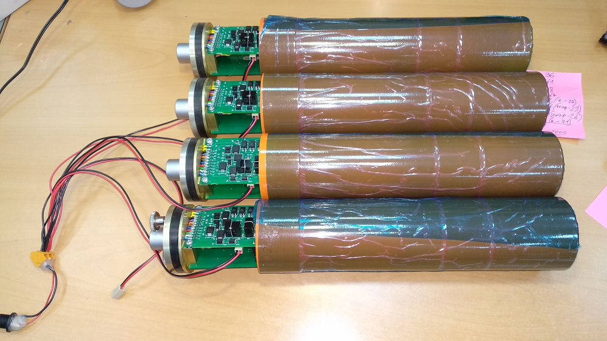
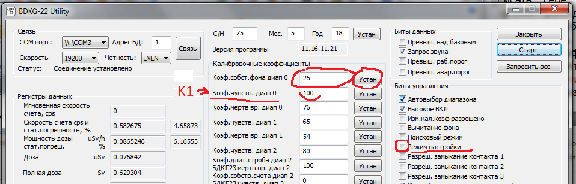

БДКГ-22. Настройка фона
Каждый БДКГ-22 настраивается на фоне примерно 3-4 часа, поэтому если блоков несколько, и подключать их поочередно через Фишеровский разъем, то на настройку всех блоков уйдет очень много времени. Поэтому нужно подключать их сразу несколько (подробнее ) — питание подключается ко всем БД, разъем обмена подключается к тому блоку, который нужно подключить к компьютеру. - Подключить питание на все блоки. Не отключать блоки от HU2, а подсоединять HU3 к обмену, так не будет сбрасываться статистика!
- На каждом блоке нажать "Сброс усреднения"
- Оставить блоки на 3-4 часа. Пусть набирают фон. На всё время настройки фона следует избегать работ с источниками вблизи БД
- Через 3-4 часа подключится к каждому блоку через HU-разъем обмена и проверить показания.
 Фон должен быть в пределах 100-110 нЗв — т.е. 0,100-0,110 uSv/h (процент погрешности будет примерно равен 2%)
Фон должен быть в пределах 100-110 нЗв — т.е. 0,100-0,110 uSv/h (процент погрешности будет примерно равен 2%) - Если фон в допустимых пределах, нажать "Сброс усреднения" и оставить еще на 3-4 часа — для перепроверки
- Если после повторного цикла фон остался в требуемых пределах — блок можно отключать, работа с ним закончена
- Для разблокировки кнопок управления — еще раз набрать слово serial
- Если программа считывает показания с БД (т.е. уже была нажата кнопка "Старт"), нажать "Стоп"
- Поставить флажок "Режим настройки"
- Записать себе (в Excel, например): номер блока, мощность дозы, значение "Коэф.собст.фона диап 0", процент погрешности
- В поле "Коэф.собст.фона диап 0" поставить нужный коэффициент. Если мощность дозы нужно увеличить, то коэффициент следует уменьшить; если мощность дозы нужно уменьшить, то коэффициент следует увеличить
- Обязательно снять флажок "Режим настройки"(не забывать, при включенном "режиме настройки" БД считает по другому алгоритму и данные будут сильно отличаться от правильных! (показания ниже ~ в 1,5 раза)) 
- Нажать "Старт"
- Нажать "Сброс усреднения"
- Перепроверить показания через 3-4 часа
Чтобы не подбирать значение коэффициенты наугад, можно воспользоваться следующей формой,
или Excel файлом, где: Count - "Скорость счета", МД - желаемое значение мощности дозы (107), К1 - значение "Коэф.чувств. диап 0". В поле "Расч.Знач. К0" выводится расчитанное значение коэффициента — "Коэф.собст.фона диап 0"